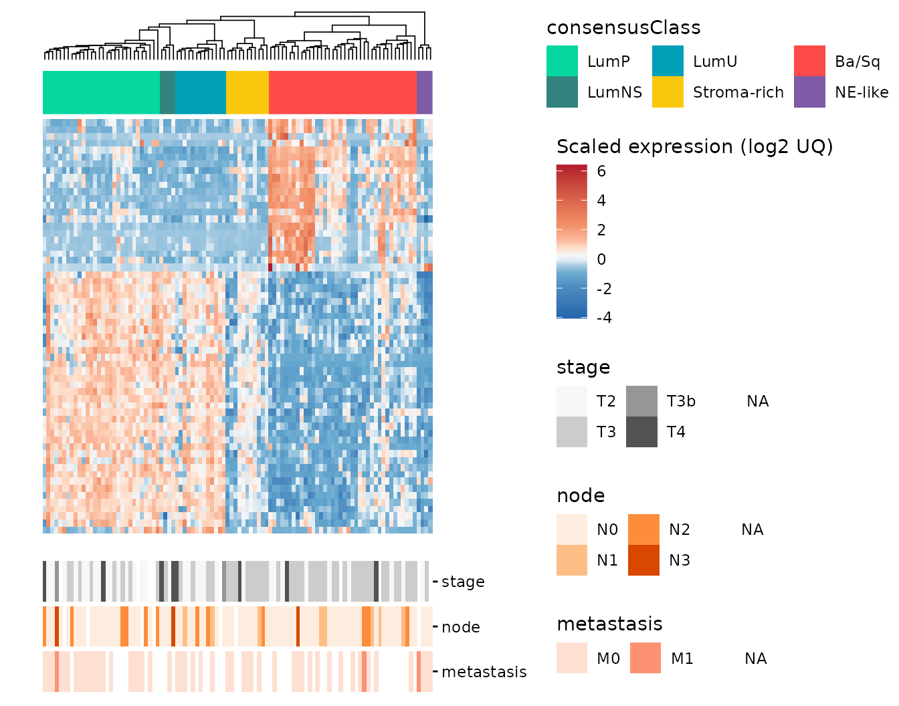

ggheatmap: Tile-able heatmaps that play well with ggplots
Clarice S. Groeneveld
2021-04-26
ggheatmap.RmdIntroduction
ggheatmap is built using ggplot2 and the patchwork framework for aligning plots. It supports adding into the heatmap and all the powerful tweaks enabled by themes in ggplot, and helps you align more information about your data to the original heatmap to make “complex heatmaps” with a more modern and tweakable framework.
Using a matrix as your table
The simplest, yet less powerful, way to use ggheatmap is with a matrix as-is. Here, we demonstrate with a subset of a gene expression matrix for bladder cancer samples:
library(tidyverse)
#> ── Attaching packages ─────────────────────────────────────── tidyverse 1.3.0 ──
#> ✓ ggplot2 3.3.3 ✓ purrr 0.3.4
#> ✓ tibble 3.1.0 ✓ dplyr 1.0.5
#> ✓ tidyr 1.1.3 ✓ stringr 1.4.0
#> ✓ readr 1.4.0 ✓ forcats 0.5.1
#> ── Conflicts ────────────────────────────────────────── tidyverse_conflicts() ──
#> x dplyr::filter() masks stats::filter()
#> x dplyr::lag() masks stats::lag()
library(patchwork)
library(ggheatmap)
#> Registered S3 method overwritten by 'treeio':
#> method from
#> root.phylo ape
data(tcgaBLCA_ex)
gexp <- tcgaBLCA_ex$gexp
gghm <- ggheatmap(gexp,
hm_colors = 'RdBu',
hm_color_values = scales::rescale(c(-4,-2,-1,-0.5,-0.25,0,0.25,0.5,1,2,4,6)),
scale = TRUE,
center = TRUE,
show_dend_row = TRUE,
colors_title = "Scaled expression (log2 UQ)",
show_colnames = FALSE)
gghm This method still will support extending with
This method still will support extending with align_to_hm but would not support add_tracks. You can still modify this by using & and adding theme, for example:
gghm &
theme(axis.text = element_text(size = 6))
Using tables with more variables
If transpose our original table and extended it with new variables, we can unlock more features using ggheatmap.
sample_annot <- tcgaBLCA_ex$sample_annot %>% as_tibble()
genes <- rownames(gexp)
tcgaBLCA_tb <- gexp %>%
t() %>%
as.data.frame() %>%
rownames_to_column("sample") %>%
left_join(sample_annot, by = "sample") %>%
tibble() %>%
group_by(consensusClass)
tcgaBLCA_tb
#> # A tibble: 100 x 79
#> # Groups: consensusClass [6]
#> sample FBP1 ACER2 PKHD1 CAPN5 S100P TMEM51 DHRS2 CYP4F22 SPINK1 ACSL5
#> <chr> <dbl> <dbl> <dbl> <dbl> <dbl> <dbl> <dbl> <dbl> <dbl> <dbl>
#> 1 TCGA-XF-A9S… 3.05 0.760 1.03 3.19 7.25 4.70 3.55 0.0458 8.07 5.22
#> 2 TCGA-BL-A13… 2.54 4.44 0.250 2.98 4.28 2.69 8.25 1.73 3.90 4.77
#> 3 TCGA-C4-A0F… 1.53 2.04 3.09 2.47 4.09 3.34 4.32 0.226 1.80 1.61
#> 4 TCGA-BT-A20… 5.98 5.05 1.22 4.92 7.03 4.97 8.03 5.10 8.85 6.83
#> 5 TCGA-GV-A40… 6.03 3.95 2.84 7.06 6.68 5.81 4.73 5.15 9.80 3.99
#> 6 TCGA-HQ-A2O… 5.56 5.36 3.59 5.41 7.05 5.54 6.58 1.12 7.46 6.39
#> 7 TCGA-XF-A8H… 8.32 5.76 3.46 6.90 8.26 5.50 9.91 7.05 11.2 6.65
#> 8 TCGA-DK-A2I… 7.42 4.78 1.18 5.45 7.82 4.89 8.41 5.38 8.42 7.50
#> 9 TCGA-UY-A78… 6.32 1.55 0.0317 1.64 7.23 5.51 8.22 1.82 0.474 4.05
#> 10 TCGA-BL-A13… 2.50 0.438 0.0181 3.88 1.16 4.88 0.696 0.451 0.204 5.02
#> # … with 90 more rows, and 68 more variables: ST3GAL5 <dbl>, TBX3 <dbl>,
#> # HPGD <dbl>, TGFBR3 <dbl>, FAM3B <dbl>, ATP8B1 <dbl>, RNF128 <dbl>,
#> # SNCG <dbl>, SLC44A3 <dbl>, GATA3 <dbl>, PPARG <dbl>, ICA1 <dbl>,
#> # GGT6 <dbl>, RAB11A <dbl>, TRAK1 <dbl>, VSIG2 <dbl>, BCAS1 <dbl>,
#> # RAB15 <dbl>, FAM174B <dbl>, SLC29A3 <dbl>, FOXA1 <dbl>, GOLT1A <dbl>,
#> # PPFIBP2 <dbl>, DENND2D <dbl>, ACAA1 <dbl>, DNAJA4 <dbl>, HMGCS2 <dbl>,
#> # CYP2J2 <dbl>, VSNL1 <dbl>, KRT14 <dbl>, TGM1 <dbl>, SERPINB4 <dbl>,
#> # GSDMC <dbl>, KRT6A <dbl>, LGALS7 <dbl>, SFN <dbl>, SPRR2A <dbl>,
#> # C12orf54 <dbl>, SPRR2D <dbl>, HOXD11 <dbl>, KRT6C <dbl>, KRT5 <dbl>,
#> # DSG3 <dbl>, KRT6B <dbl>, HOXD10 <dbl>, IL20RB <dbl>, RHCG <dbl>,
#> # AHNAK2 <dbl>, SPRR2F <dbl>, FGFBP1 <dbl>, sex <chr>, age <dbl>,
#> # stage <chr>, node <chr>, metastasis <chr>, papillary <chr>, squamous <chr>,
#> # neuroendocrine <chr>, plasmacytoid <chr>, consensusClass <fct>,
#> # cor_pval <dbl>, separationLevel <dbl>, LumP <dbl>, LumNS <dbl>, LumU <dbl>,
#> # Stroma.rich <dbl>, Ba.Sq <dbl>, NE.like <dbl>One of the additional features we unlock is using grouping with group_by to make semi-supervised heatmaps. In this case, we need to say which column contains the IDs that will be the columns of the heatmap (in this case, colv = 'sample'), and what are the columns we want to plot as rows (rowv = genes). Other parameters here are graphical, for demonstration:
gr_gghm <- ggheatmap(tcgaBLCA_tb,
colv = "sample",
rowv = genes,
hm_colors = 'RdBu',
hm_color_values = scales::rescale(c(-4,-2,-1,-0.5,-0.25,0,0.25,0.5,1,2,4,6)),
scale = TRUE,
center = TRUE,
show_dend_row = FALSE,
show_colnames = FALSE,
show_rownames = FALSE,
group_colors = c(`Ba/Sq` = "#fe4a49", LumNS = "#32837d", LumP = "#06d6a0", LumU = "#009fb7",
`Stroma-rich` = "#f9c80e", `NE-like` = "#7d5ba6"),
colors_title = "Scaled expression (log2 UQ)")
gr_gghm +
plot_layout(guides = 'collect') Here, we can see that the heatmap is clustered in a semi-supervised manner (by
Here, we can see that the heatmap is clustered in a semi-supervised manner (by consensusClass). It also enables add_tracks:
Adding tracks
You can add_tracks for variables that were in the original table fed to ggheatmap. You can see what variables are available using gghmData:
gghmData(gr_gghm) %>% colnames()
#> [1] "observations" "FBP1" "ACER2" "PKHD1"
#> [5] "CAPN5" "S100P" "TMEM51" "DHRS2"
#> [9] "CYP4F22" "SPINK1" "ACSL5" "ST3GAL5"
#> [13] "TBX3" "HPGD" "TGFBR3" "FAM3B"
#> [17] "ATP8B1" "RNF128" "SNCG" "SLC44A3"
#> [21] "GATA3" "PPARG" "ICA1" "GGT6"
#> [25] "RAB11A" "TRAK1" "VSIG2" "BCAS1"
#> [29] "RAB15" "FAM174B" "SLC29A3" "FOXA1"
#> [33] "GOLT1A" "PPFIBP2" "DENND2D" "ACAA1"
#> [37] "DNAJA4" "HMGCS2" "CYP2J2" "VSNL1"
#> [41] "KRT14" "TGM1" "SERPINB4" "GSDMC"
#> [45] "KRT6A" "LGALS7" "SFN" "SPRR2A"
#> [49] "C12orf54" "SPRR2D" "HOXD11" "KRT6C"
#> [53] "KRT5" "DSG3" "KRT6B" "HOXD10"
#> [57] "IL20RB" "RHCG" "AHNAK2" "SPRR2F"
#> [61] "FGFBP1" "sex" "age" "stage"
#> [65] "node" "metastasis" "papillary" "squamous"
#> [69] "neuroendocrine" "plasmacytoid" "consensusClass" "cor_pval"
#> [73] "separationLevel" "LumP" "LumNS" "LumU"
#> [77] "Stroma.rich" "Ba.Sq" "NE.like"observations will always be your ID variable, which is a factor ordered in the same way as the heatmap, to ease making new plots that will be perfectly aligned. Here, we’ll add some clinical tracks:
gr_gghm <- add_tracks(gr_gghm,
track_columns = c("stage", "node", "metastasis"),
track_colors = list(stage = 'Greys', node = 'Oranges', metastasis = 'Reds'),
track_prop = 0.2)
#> Adding missing grouping variables: `consensusClass`
gr_gghm +
plot_layout(guides = 'collect')
Aligning new plots
Here we’ll make two different plots: one to align with the samples (columns) and another to align with the genes (rows). We can get the data from gghmData, which is a good idea to facilitate further plotting because it will ensure your observations will be in the correct order. Then, here, we make a line-plot with the correlations of each sample to the centroid of the 6 consensus bladder cancer subtypes. Note the use of theme_quant, one of our suggested themes that look nice with ggheatmaps, and that we switch the y-axis to the right side to make the end-product look better (though everything will work without this):
tcgaBLCA_tb2 <- gghmData(gr_gghm)
plt_corlines <- tcgaBLCA_tb2 %>%
ungroup() %>%
select(observations, LumP:NE.like) %>%
pivot_longer(cols = -observations, names_to = "subtype", values_to = "cor") %>%
ggplot(aes(observations, cor, color = subtype, group = subtype)) +
geom_line() +
scale_y_continuous(position = "right") +
scale_color_manual(values = c(`Ba.Sq` = "#fe4a49", LumNS = "#32837d", LumP = "#06d6a0", LumU = "#009fb7",
`Stroma.rich` = "#f9c80e", `NE.like` = "#7d5ba6")) +
guides(color = FALSE) +
labs(y = "Correlation\n to centroid") +
theme_quant()
plt_corlines The second plot should align to the rows. We can’t just use the
The second plot should align to the rows. We can’t just use the gghmData because it doesn’t contain the information to order our rows, but we can get this from gghm_rowLevels. Here, we plot which signature each gene in our example data belongs to:
plt_row_annot <- tcgaBLCA_ex$gene_annot %>%
mutate(gene_symbol = factor(gene_symbol, levels = gghm_rowLevels(gr_gghm)),
group = 'signature') %>%
ggplot(aes(gene_symbol, group, fill = signature)) +
geom_tile() +
labs(y = "") +
coord_flip() +
theme_sparse2()
plt_row_annot
Finally, we can use align_to_hm to add these plots to the original hm with all panels properly aligned. Note the use of legend_action = 'collect' in the final call, that will unite all the legends in a nice way:
gghm_complete <- gr_gghm %>%
align_to_hm(plt_corlines, newplt_size_prop = 0.3) %>%
align_to_hm(plt_row_annot, pos = "left", newplt_size_prop = 0.08,
legend_action = "collect", tag_level = 'keep')
gghm_complete
Note that you can still use the patchwork & to make global changes to all plots:
gghm_complete <- gghm_complete &
theme(legend.text = element_text(size = 7),
legend.title = element_text(size = 8))
gghm_complete
Creating panels
You can now make panels with your complete heatmap with patchwork, cowplot or other aligning packages. For example:
plt_subtype_count <- ggplot(sample_annot, aes(consensusClass, fill = consensusClass)) +
geom_bar() +
scale_fill_manual(values = c(`Ba/Sq` = "#fe4a49", LumNS = "#32837d",
LumP = "#06d6a0", LumU = "#009fb7",
`Stroma-rich` = "#f9c80e",
`NE-like` = "#7d5ba6")) +
labs(y = 'Number of samples') +
guides(fill = FALSE) +
theme_quant() +
theme(axis.ticks.x = element_line(color = "black"),
axis.text.x = element_text(color = "black", angle = 45, hjust = 1, vjust = 1))
plt_subtype_count
Then, we can just use standard patchwork to align the ggheatmap and our new plots (as they won’t be aligned with the heatmap part of the plot, but with the entire plot):
library(patchwork)
new_col <- (plt_subtype_count + plot_spacer()) +
plot_layout(heights = c(0.3,0.7))
(new_col | gghm_complete) +
plot_layout(widths = c(0.4,0.6))